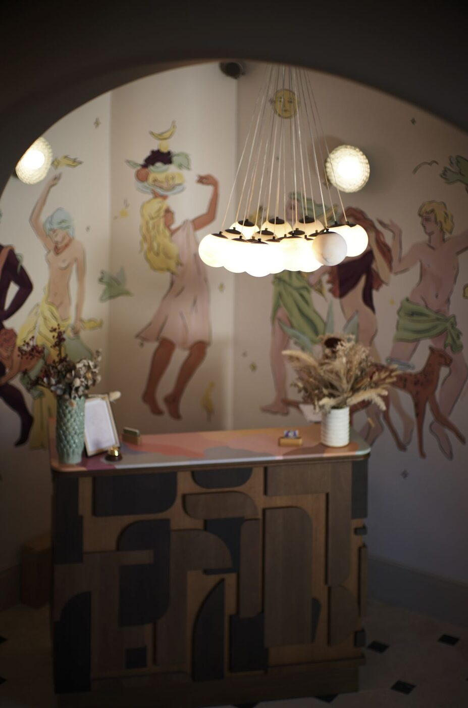

An hour and a half west of Paris, a red-brick manor from 1886 was handed to seven artists. They painted the ceilings, the stairwell, every bathroom and the bottom of the pool.
The house stands in Verneuil-sur-Avre, where Normandy runs into the Perche. Benedictine nuns of the Abbaye Saint-Nicolas had it built, and a mosaic compass rose still meets guests at the door. In 1961 it became the Hostellerie du Clos. The Simon family ran it for four decades, and it joined Relais & Châteaux in 1975.
Camille Agnès Omerin took it over in June 2022. She had worked at Chloé, then started her own label, Maison Père, which had already drifted into furniture. She spent two and a half years on the house and opened it in October 2025 as Verneuil la Douce. There is no architect of record; she drew the dining chairs and the headboards herself.
The walls
Ségolène Derudder took the largest share. Her four seasons, painted as Greek gods and goddesses, run across the roof of the iron-and-glass conservatory, and a blue-haired cherub plays the violin above a dining room. She also wrote lines of verse straight onto bedroom walls. The conservatory serves tea by day and drinks until eleven at night.
Margot Gillot mixes her paint from lime and casein, the old fresco way, and made a different picture for every bathroom. Celeste, a duo from Mexico City, carried a desert landscape up the curved stairwell over two floors. Ben Arpéa painted a Normandy spring on the floor of the outdoor pool. Alice Louradour gave the indoor pool hard, bright geometry.

Painted walls at Verneuil la Douce, Verneuil-sur-Avre. Courtesy of Splendid Magazine
Hermentaire, the painting name of Damien de Medeiros, covered the spa with a tribe of his own invention. Kimmy Quillin, a New York painter, took the orangery. Omerin has said she wanted every object singular, down to the washbasins and the teaspoons. A walk down any corridor bears her out.
Most country hotels buy paintings for the walls. This one gave seven painters the plaster, and the bottom of the pool.
Léa FontaineThe rooms
Seventeen rooms are split between the main house and an annexe, and none repeats. Palette rooms run from 20 to 29 square metres with king beds. Rêverie suites, 35 to 50 square metres, add a sitting room; Eden suites each come with a conservatory. Two family suites of 50 square metres sleep four.
No room has a television. A projector comes if you ask for one.
The table
Patiné, the restaurant, fills two rooms of the old house, with angel bas-reliefs and fireplaces in pink and red marble. Cyril Coutin cooks. He came up through the Trianon Palace at Versailles and Marc Meneau’s L’Espérance at Vézelay, and he and his wife Lucie already run Le Madeleine a few streets away. On Saturday mornings he shops the market on the church square and builds the menu from it.
The gastronomic menu runs Thursday and Friday nights, Saturday lunch and dinner, and Sunday night. Sunday lunch is a brunch from midday with a pianist. The rest of the week there is Esquisse Gourmande, a short list of oysters, salmon, salads and cheese with the house focaccia, served all day without a booking.
Henry I founded the town in 1120 to hold the Avre against France. The Madeleine church tower, Flamboyant Gothic and 56 metres high, still shows above the fields for miles. Direct trains from Paris-Montparnasse take about an hour and ten minutes, and the house is a quarter of an hour’s walk from the station.
Verneuil la Douce is in Verneuil-sur-Avre, Normandy, on the edge of the Perche.
Photography courtesy of Splendid Magazine